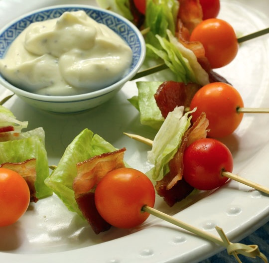

BLT Kebabs

Bacon Lettuce and Tomato Kebabs with Mayo as dip
This is a light, yet filling meal that you can enjoy with simple ingredients and quick prep time.
If you like BLT's this is a good way to enjoy it without the additional carbs and processed ingredients from the bread,
a great choice for eating within a low carb diet.
Ingredients:
- 1 pack of bacon
- 10 cherry tomatoes
- Half a head of lettuce
Steps:
- Cook the Bacon: Preheat the oven to 400°F (200°C).
Cook the bacon on a baking sheet for 15 to 20 minutes, or until crispy.
- Prepare the Tomatoes: While the bacon is cooking, cut the tomatoes into halves.
- Prepare the Lettuce: Chop the lettuce into small, bite-sized squares.
- Soak the Bamboo Sticks: Soak the bamboo skewers in warm water while prepping the vegetables to prevent them from splintering while eating.
- Assemble the Kebabs: Once the bacon is done, begin assembling the kebabs.
- Layer the Ingredients: Take one bamboo skewer at a time and thread the ingredients in this order: lettuce, bacon, tomato.
- Repeat: Continue assembling the kebabs until each skewer is full, but avoid overloading them.
Home